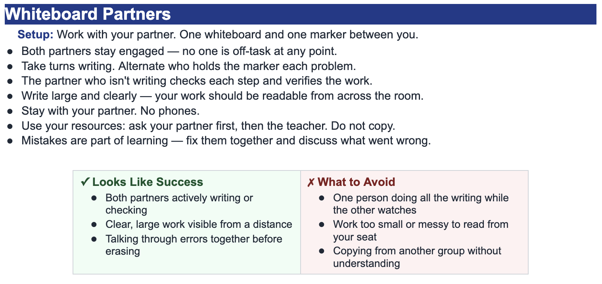
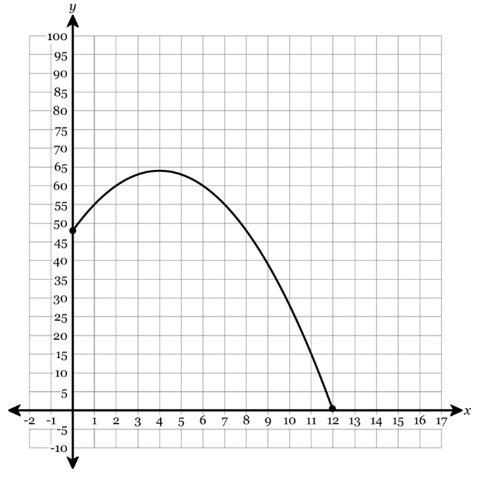

Problem 3
The graph of $h$ is shown.
- Identify the vertex.
- State whether the graph opens upward or downward.
- Use the graph to estimate the $x$-intercepts.


Identify the values of $a$, $h$, and $k$ for each function written in the form $y=a(x-h)^2+k$.
Key idea: rewrite the inside as $x-h$.
Match each function to its transformation from $y=x^2$.
Transformations: reflection over the $x$-axis, shift right 4, vertical stretch by a factor of 3, shift up 6.
The graph of $h$ is shown.
Fill in the blanks.
For $y=2(x-7)^2-3$, the graph is shifted ______ units right, ______ units down, stretched by a factor of ______, and opens ______.
The graph is shifted 7 units right, 3 units down, stretched by a factor of 2, and opens upward.
Write a quadratic equation in vertex form with:
Use $y=a(x-h)^2+k$.
Here $a=\frac{1}{2}$, $h=-1$, and $k=4$.
Answer: $y=\frac{1}{2}(x+1)^2+4$
For the function $f(x)=3(x+2)^2-12$, find:
State whether each graph is wider, narrower, or the same width as $y=x^2$.
A student says, “The graph of $y=-\frac{1}{2}(x-3)^2+4$ is narrower than $y=x^2$ because there is a fraction.”
Is the student correct? Explain.
No. Since $|a|=\frac{1}{2}$, the graph is wider than $y=x^2$.
The negative sign makes the parabola open downward.
The graph of $p$ is shown.

The table represents a quadratic function.
| $x$ | $-2$ | $-1$ | $0$ | $1$ | $2$ |
|---|---|---|---|---|---|
| $y$ | $5$ | $2$ | $1$ | $2$ | $5$ |
Find the equation in vertex form.
The outputs are symmetric about $x=0$, and the minimum value is $1$.
Vertex: $(0,1)$.
Use point $(1,2)$: $2=a(1-0)^2+1$, so $a=1$.
Answer: $y=x^2+1$
Which equation has each description?
$y=-2(x-3)^2+5$ $y=\frac{1}{3}x^2$ $y=4(x+4)^2-2$
The height of a ball is modeled by the graph shown.

Write a vertex-form equation for a parabola with vertex $(5,-6)$ that opens downward and has vertical stretch factor $2$.
Opening downward means $a$ is negative.
Vertical stretch factor $2$ means $|a|=2$.
Answer: $y=-2(x-5)^2-6$
A student claims that the following two functions have the same graph because they both have vertex $(2,5)$:
$f(x)=2(x-2)^2+5$ and $g(x)=\frac{1}{2}(x-2)^2+5$
The graph of $r$ is shown.

Create one possible quadratic equation in vertex form that:
One possible answer is $y=-\frac{1}{2}(x+3)^2+2$.
The negative $a$ opens downward, and $|a|=\frac{1}{2}$ makes the graph wider.